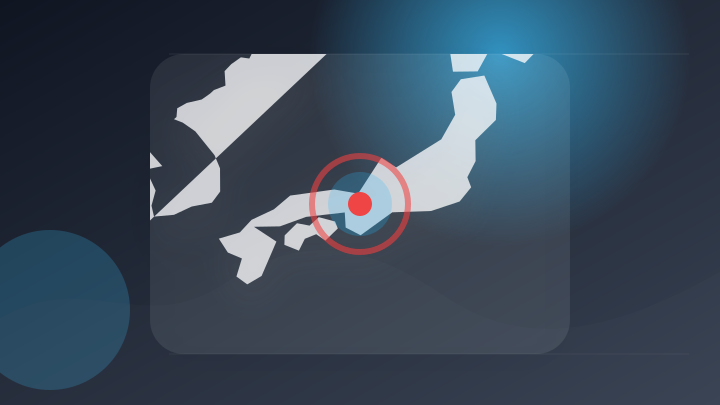
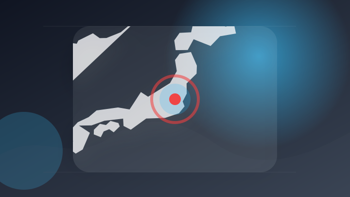
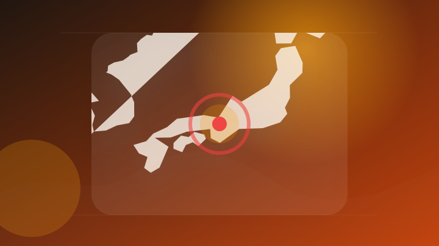

AI
3 topics
Claude Fable 5が一部のサブスクプランで使用可能に - GIGAZINE
Claude Fable 5が一部のサブスクプランで使用可能に GIGAZINE
- 注目ポイント
- Claude｜注目度 29点｜出典: GIGAZINE
- 見るべきポイント
- 誰に影響するか、いつから変わるか、報道元が示す具体的な根拠を確認。
「機密情報を無断で送信」中国当局がClaude Codeにバックドア疑惑、 アリババは使用禁止に - MSN
「機密情報を無断で送信」中国当局がClaude Codeにバックドア疑惑、 アリババは使用禁止に MSN
- 注目ポイント
- Claude｜注目度 25点｜出典: MSN
- 見るべきポイント
- 誰に影響するか、いつから変わるか、報道元が示す具体的な根拠を確認。
「AIエージェントサービスの健全な発展に向けた法の支配に関する10原則」白書が発表 - CGTN Japanese
「AIエージェントサービスの健全な発展に向けた法の支配に関する10原則」白書が発表 CGTN Japanese
- 注目ポイント
- AI・発表｜注目度 25点｜出典: CGTN Japanese
- 見るべきポイント
- 誰に影響するか、いつから変わるか、報道元が示す具体的な根拠を確認。
IT業界
3 topics
Windows 11の一部Dell製PC向け不具合を修正する緊急更新KB5121767が配信 - GAZLOG
Windows 11の一部Dell製PC向け不具合を修正する緊急更新KB5121767が配信 GAZLOG
- 注目ポイント
- Windows・11の一部Dell製PC向け不具合を修正する緊急更新KB5121767が配信｜注目度 34点｜出典: GAZLOG
- 見るべきポイント
- 誰に影響するか、いつから変わるか、報道元が示す具体的な根拠を確認。
過去最多の飲食倒産…「値上げ無理」は幻想? 居酒屋店主「常連さんもいるので、なるべく抑えたい」独立前に経営を学ぶ必要性も - MSN
過去最多の飲食倒産…「値上げ無理」は幻想? 居酒屋店主「常連さんもいるので、なるべく抑えたい」独立前に経営を学ぶ必…
- 注目ポイント
- 値上げ｜注目度 25点｜出典: MSN
- 見るべきポイント
- 対象期間、金額・変化率、前回との比較、生活や市場への影響を確認。
Xpeng、スマートドライビングのグローバル展開に向けGoogle Mapsを採用 - Moomoo
Xpeng、スマートドライビングのグローバル展開に向けGoogle Mapsを採用 Moomoo
- 注目ポイント
- Google｜注目度 25点｜出典: Moomoo
- 見るべきポイント
- 誰に影響するか、いつから変わるか、報道元が示す具体的な根拠を確認。
政治
3 topics
副首都法案、今国会の成立「不要」60% 大阪府でも5割 朝日世論 [国旗損壊罪 高市早苗総理 自民党] - 朝日新聞
副首都法案、今国会の成立「不要」60% 大阪府でも5割 朝日世論 [国旗損壊罪 高市早苗総理 自民党] 朝日新聞
- 注目ポイント
- 法案｜注目度 39点｜出典: 朝日新聞
- 見るべきポイント
- 対象になる人、決定済みか検討中か、施行日・申請期限を確認。

東京・あきる野市長に臼井氏 市政継承訴え初当選、自民・公明が推薦 [東京都] - 朝日新聞
東京・あきる野市長に臼井氏 市政継承訴え初当選、自民・公明が推薦 [東京都] 朝日新聞
- 注目ポイント
- 東京・あきる野市長に臼井氏・市政継承訴え初当選・自民・公明が推薦｜注目度 30点｜出典: 朝日新聞
- 見るべきポイント
- 誰に影響するか、いつから変わるか、報道元が示す具体的な根拠を確認。
国会前でデモ 改憲の動きなどに抗議の声 [写真特集1/9] - 毎日新聞
国会前でデモ 改憲の動きなどに抗議の声 [写真特集1/9] 毎日新聞
- 注目ポイント
- 国会前でデモ・改憲の動きなどに抗議の声・[写真特集1｜注目度 30点｜出典: 毎日新聞
- 見るべきポイント
- 誰に影響するか、いつから変わるか、報道元が示す具体的な根拠を確認。
社会
3 topics

栃木・足利市の土砂崩れ 倒壊した家屋から心肺停止の60代男性発見 その後死亡確認 - au Webポータル
栃木・足利市の土砂崩れ 倒壊した家屋から心肺停止の60代男性発見 その後死亡確認 au Webポータル
- 注目ポイント
- 停止・死亡｜注目度 34点｜出典: au Webポータル
- 見るべきポイント
- 発生場所と時刻、警察・消防など公的機関の発表、続報で変わった点を確認。
【裁判ルポ②】「やれと言われた」「指示を出していない」食い違う証言 「真実」はどこに？ 江別市大学生暴行死 「主犯格」の男らの裁判 - SODANE
【裁判ルポ②】「やれと言われた」「指示を出していない」食い違う証言 「真実」はどこに？ 江別市大学生暴行死 「主犯…
- 注目ポイント
- 裁判｜注目度 25点｜出典: SODANE
- 見るべきポイント
- 誰に影響するか、いつから変わるか、報道元が示す具体的な根拠を確認。

「海の日」は広い範囲で厳しい暑さ 東京都心は今年初の猛暑日か - au Webポータル
「海の日」は広い範囲で厳しい暑さ 東京都心は今年初の猛暑日か au Webポータル
- 注目ポイント
- 「海の日」は広い範囲で厳しい暑さ・東京都心は今年初の猛暑日か｜注目度 25点｜出典: au Webポータル
- 見るべきポイント
- 誰に影響するか、いつから変わるか、報道元が示す具体的な根拠を確認。
ゲーム
3 topics
スマートフォンアプリ『My Nintendo』がアップデート。Nintendo Switchで最近遊んだ記録が見られるようになりました。 - nintendo.com
スマートフォンアプリ『My Nintendo』がアップデート。Nintendo Switchで最近遊んだ記録が見ら…
- 注目ポイント
- スマートフォンアプリ『My・Nintendo』がアップデート。Nintendo・Switchで最近遊んだ記録が見られるようになりました。｜注目度 31点｜出典: nintendo.com
- 見るべきポイント
- 対象製品・バージョン、利用可能時期、影響範囲と必要な対応を確認。
シリーズ最新作『帰ってきた 魔界村』 Nintendo Switchで本日発売。最新の紹介映像も公開。 - nintendo.com
シリーズ最新作『帰ってきた 魔界村』 Nintendo Switchで本日発売。最新の紹介映像も公開。 ninte…
- 注目ポイント
- 公開｜注目度 31点｜出典: nintendo.com
- 見るべきポイント
- 対象製品・バージョン、利用可能時期、影響範囲と必要な対応を確認。
マーベル格闘ゲーム『MARVEL Tōkon: Fighting Souls』2026年発売決定！アークシステムワークスが開発 - 玩具人 TOY PEOPLE
マーベル格闘ゲーム『MARVEL Tōkon: Fighting Souls』2026年発売決定！アークシステムワ…
- 注目ポイント
- マーベル格闘ゲーム『MARVEL・Tōkon・Fighting｜注目度 25点｜出典: 玩具人 TOY PEOPLE
- 見るべきポイント
- 対象製品・バージョン、利用可能時期、影響範囲と必要な対応を確認。